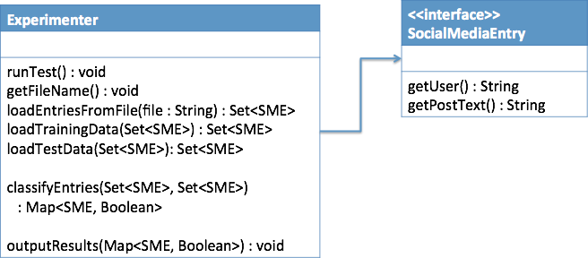

Team Activity - Design Patterns Practice 2
Introduction
As a team, consider the following scenario and identify the design pattern that would best apply. Then select that design pattern in the first I-Learn quiz. This will give you feedback about your choice, and make sure we have all decided on the same pattern, before continuing on.
Once you have identified the pattern to use, you will then need to clone the GitHub repository with the sample code from which to start. As a team, you will then need to modify this code to apply the design principle.
Scenario
Consider another application of analyzing social media data. In this case, assume that we have a list of FacebookPosts that we want to have our system using a machine learning algorithm to be able to "classify" each post in some form or another. For example, we may want to have the program classify the post as "true" if it refers to a health condition such as drug abuse or suicide risk, and classify it as false otherwise.
Assuming that we have a file full of various Facebook posts, we would then need to go through a process as follows:
- Get file name for the data set
- Load the entries from the file
- Get the training set
- Get the test set
- Classify the entries (build predictive machine learning model and apply it)
- Output the results
The catch here is that there are many different machine learning algorithms that we might choose to use for the classification process, for example Naïve Bayes, a Decision Tree, a Neural Network, a Support Vector Machine, and more. Come and take CS 450 (Machine Learning and Data Mining) to learn more about this whole process and these algorithms!
So as it stands we have a process that will be almost identical for each learning algorithm, but step 5 will be different. Thus, we will want to choose a design pattern that will help us apply the principle "separate what changes from what stays the same." So in particular, the problem at hand is, how do we make our solution flexible to be able to use multiple algorithms, given our classes that look as follows:
Please answer the first quiz question before proceeding.
After determining the design pattern to apply, please apply this pattern to sample code that contains all the classes and interfaces mentioned above. This is a NetBeans project that is found at: https://github.com/sburton42/SocialMediaDesignPattern2
Please clone that project and change it to work with the chosen design pattern. For this example, rather than using the real algorithms noted above. You should code up two "algorithms," TrueClassifier and RandomClassifier, that always set the value to true, or set it to a random value, respectively. After implementing these two algorithms, change the code in the "run" method to use the Random version.
When finished, please commit your code to a new public repository at GitHub and upload the link in the following I-Learn assessment. You only need to have one GitHub repository for your team, but each person should fill out the assessment.